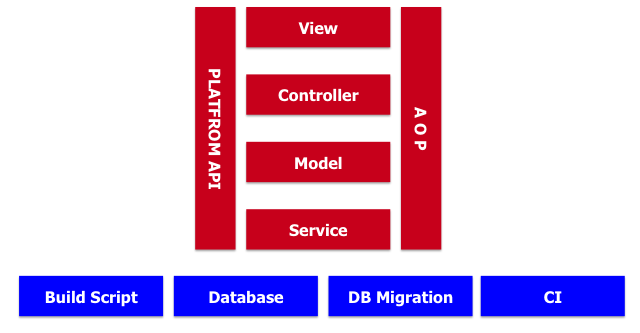
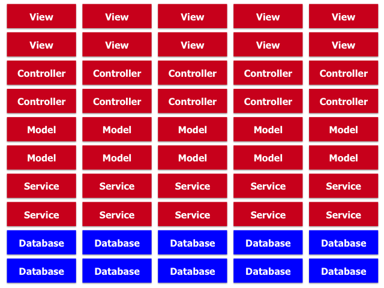
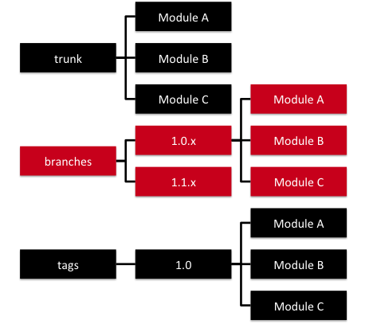
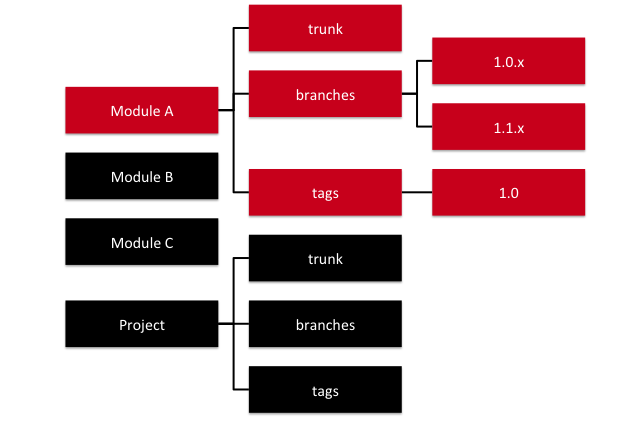
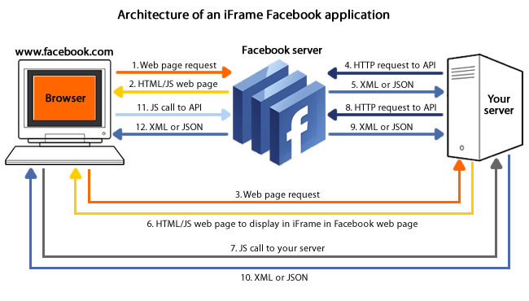

<!DOCTYPE html>
<html>
<head><meta name="generator" content="Hexo 3.9.0">
    <meta charset="UTF-8">
    <meta name="viewport" content="width=device-width, initial-scale=1, maximum-scale=1">
    
    <meta name="author" content="挥手の骑士">
    
    
    
    
    
    
    <title>架构混乱之谜 | 骑士の物语</title>
    <link href="https://yihuishou.github.io" rel="prefetch">

    <link rel="stylesheet" href="/css/bootstrap.min.css">
<link rel="stylesheet" href="/css/aos.css">
<link rel="stylesheet" href="/css/style.css">
    <script src="/js/jquery.min.js"></script>
    <script src="/js/bootstrap.min.js"></script>
    <script src="/js/aos.js"></script>
    <script src="/js/highslide/highslide-full.min.js"></script>
    <link rel="stylesheet" href="/js/highslide/highslide.css">
    <style type="text/css">
        @media (max-width: 768px) {
            body {
                background-color: #f0f0f0;
                background: url('/imgs/xsbg.gif');
                background-attachment: fixed;
            }
        }
    </style>
    
    <!--<script type="text/javascript">
      if (document.images) {
        var avatar = new Image();
        avatar.src = '/imgs/avatar.jpg'
        var previews = 'picHD_1.png,picHD_2.png,picHD_3.png,picHD_4.png,picHD_5.png,picHD_6.png,picHD_7.png,picHD_8.png,picHD_9.png,picHD_10.png,picHD_11.png,picHD_12.png,picHD_13.png,picHD_14.png,picHD_15.png,picHD_16.png,picHD_17.png,picHD_18.png,picHD_19.png,picHD_20.png,picHD_21.png,picHD_22.png,picHD_23.png,picHD_24.png,picHD_25.png,picHD_26.png,picHD_27.png,picHD_28.png,picHD_29.png,picHD_30.png,picHD_31.png,picHD_32.png,picHD_33.png,picHD_34.png,picHD_35.png,picHD_36.png,picHD_37.png,picHD_38.png,picHD_39.png,picHD_40.png,picHD_41.png,picHD_42.png'.split(',')
        var previewsPreLoad = []
        for(var i = 0; i < length; i++) {
          previewsPreLoad.push(new Image())
          previewsPreLoad[previewsPreLoad.length - 1].src = '/imgs/preview' + previews[i]
        }
      }
    </script>-->
</head></html>
<body>
    <!-- 背景轮播图功能 -->
    <section class="hidden-xs">
    <ul class="cb-slideshow">
        <li><span>天若</span></li>
        <li><span>有情</span></li>
        <li><span>天亦老</span></li>
        <li><span>我为</span></li>
        <li><span>长者</span></li>
        <li><span>续一秒</span></li>
    </ul>
</section>
    <!-- 欧尼酱功能, 谁用谁知道 -->
    
    <header class="navbar navbar-inverse" id="gal-header">
    <div class="container">
        <div class="navbar-header">
            <button type="button" class="navbar-toggle collapsed"
                    data-toggle="collapse" data-target=".bs-navbar-collapse"
                    aria-expanded="false">
                <span class="fa fa-lg fa-reorder"></span>
            </button>
            <a href="https://yihuishou.github.io">
                
                <style>
                    #gal-header .navbar-brand {
                        height: 54px;
                        line-height: 24px;
                        font-size: 28px;
                        opacity: 1;
                        background-color: rgba(0,0,0,0);
                        text-shadow: 0 0 5px #fff,0 0 10px #fff,0 0 15px #fff,0 0 20px #228DFF,0 0 35px #228DFF,0 0 40px #228DFF,0 0 50px #228DFF,0 0 75px #228DFF;
                    }
                </style>
                <!-- 这里使用文字(navbar_text or config.title) -->
                <div class="navbar-brand">骑士の物语</div>
                
            </a>
        </div>
        <div class="collapse navbar-collapse bs-navbar-collapse">
            <ul class="nav navbar-nav" id="menu-gal">
                
                
                <li class="">
                    <a href="/">
                        <i class="fa fa-home"></i>首页
                    </a>
                </li>
                
                
                
                <li class="">
                    <a href="/archives">
                        <i class="fa fa-archive"></i>归档
                    </a>
                </li>
                
                
            </ul>
        </div>
    </div>
</header>
    <div id="gal-body">
        <div class="container">
            <div class="row">
                <div class="col-md-8 gal-right" id="mainstay">
                    
<article class="article well article-body" id="article">
    <div class="breadcrumb">
        <i class="fa fa-home"></i>
        <a href="https://yihuishou.github.io">骑士の物语</a>
        >
        <span>架构混乱之谜</span>
    </div>
    <!-- 大型设备详细文章 -->
    <div class="hidden-xs">
        <div class="title-article">
            <h1>
                <a href="/2019/03/08/3607390463/">架构混乱之谜</a>
            </h1>
        </div>
        <div class="tag-article">
            
            <span class="label label-gal">
                <i class="fa fa-tags"></i>
                
                <a href="/tags/随笔/">随笔</a>
                
            </span>
            
            <span class="label label-gal">
                <i class="fa fa-calendar"></i> 2019-03-08
            </span>
            
        </div>
    </div>
    <!-- 小型设备详细文章 -->
    <div class="visible-xs">
        <center>
            <div class="title-article">
                <h4>
                    <a href="/2019/03/08/3607390463/">架构混乱之谜</a>
                </h4>
            </div>
            <p>
                <i class="fa fa-calendar"></i> 2019-03-08
            </p>
            <p>
                
                <i class="fa fa-tags"></i>
                
                <a href="/tags/随笔/">随笔</a>
                
                
                
            </p>
        </center>
    </div>
    <div class="content-article">
        <h3 id="前言"><a href="#前言" class="headerlink" title="前言"></a>前言</h3><p>新技术层出不穷。过去十年时间里，我们经历了许多激动人心的新技术，包括那些新的框架、语言、平台、编程模型等等。这些新技术极大地改善了开发人员的工作环境，缩短了产品和项目的面世时间。然而作为在软件行业第一线工作多年的从业者，我们却不得不面对一个现实，那就是当初采用新技术的乐趣随着项目周期的增长而迅速减少。无论当初的选择多么光鲜，半年、一年之后，只要这个项目依然活跃，业务在扩张——越来越多的功能需要加入，一些公共的问题就会逐渐显露出来。构建过慢，完成新功能让你痛不欲生，团队成员无法很快融入，文档无法及时更新等等。</p>
<p>在长期运转的项目中，架构的腐化是怎么产生的？为什么常见的面向对象技术无法解决这类问题？如何延缓架构的腐化？</p>
<p>本文将尝试解释这一切，并提出相应的解决方案。读者需要具备相当的开发经验——至少在同一个项目的开发上一年以上；公司负责架构演进、产品演进的角色会从本文找到灵感。</p>
<h3 id="架构"><a href="#架构" class="headerlink" title="架构"></a>架构</h3><p>架构这个词在各种场合不断地以各种面目表现出来。从维基百科的词条看来，我们经常听到的有插件架构（Plugin），以数据库为中心的架构（Database Centric），模型-视图-控制器架构（MVC），面向服务的架构（SOA），三层模型(Three-Tier model)，模型驱动架构（MDA）等等等等。奇妙的是，这些词越大，实际的开发者就越痛苦。SOA很好——但在它提出的那个年代，带给开发者的只是面向厂商虚无缥缈的“公共数据类型”；MDA甚至都没有机会沦为新一轮令人笑话的CASE工具。</p>
<p>在继续阅读之前，读者不妨问自己一个问题：在长期的项目中，这些大词是否真的切实给你带来过好处？更为功利的问题是：你，作为战斗在一线的开发者，在长期项目中可曾有过美好的体验？</p>
<p>技术的演变与挥之不去的痛</p>
<p>企业应用的发展似乎从十年前开始腾飞。从Microsoft ASP/LAMP(Linux、Apache、MySQL、PHP)年代开始，各种企业应用纷纷向浏览器迁移。经过十年的发展，目前阵营已经百花齐放。与过去不同，现在的技术不仅仅在编程语言方面，常见的编程套路、最佳实践、方法学、社区，都是各种技术独特拥有的。目前占据主流的阵营有：</p>
<p>Rails<br>Java EE平台。值得一提的是Java VM已经成为一种新的宿主平台，Scala、JRuby更为活跃并引人瞩目<br>LAMP平台。Linux/MySQL/Apache并没有多少变化，PHP社区从Rails社区获得了不少养分，出现了许多更加优秀的开发框架<br>Microsoft .NET平台<br>Django<br>没有理由对这些新技术不感到振奋。它们解决了许多它们出现之前的问题。在它们的网站上都宣称各种生产效率如何之高的广告语，类似于15分钟创建一个博客应用；2分钟快速教程等等。比起过去21天才能学会XXX，现在它们在上手难度上早已大幅度降低。</p>
<p>需要泼冷水的是，本文开篇提出的问题，在上述任何一种技术下，都如幽灵般挥之不去。采用Ruby on Rails的某高效团队在10人团队工作半年之后，构建时间从当初的2分钟变成2小时；我们之前采用Microsoft .NET 3.5 (C# 3.0)的一个项目，在产生2万行代码的时候，构建时间已经超过半小时；我们的一些客户，工作在10年的Java代码库上——他们竭尽全力，保持技术栈与时俱进：Spring、Hibernate、Struts等，面对的困境是他们需要同时打开72个项目才能在Eclipse中获得编译；由于编译打包时间过长，他们去掉了大部分的单元测试——带来巨大的质量风险。</p>
<p>如果你真的在一个长期的项目工作过，你应该清楚地了解到，这种痛苦，似乎不是任何一种框架能够根本性解决的。这些新时代的框架解决了大部分显而易见的问题，然而在一个长期项目中所面对的问题，它们无能为力。</p>
<h3 id="一步一步：架构是如何腐化的"><a href="#一步一步：架构是如何腐化的" class="headerlink" title="一步一步：架构是如何腐化的"></a>一步一步：架构是如何腐化的</h3><p>无论架构师在任何时代以何种绚丽的方式描述架构，开发中的项目不会超出下图所示：</p>
<p></p>
<p>基本架构示意</p>
<p>一些基本的准则：</p>
<p>为了降低耦合，系统应当以恰当的方式进行分层。目前最经考验的分层是MVC+Service。<br>为了提供基础的访问，一些基本的、平台级别的API应该被引入。用Spring之类的框架来做这件事情。<br>用AOP进行横向切分业务层面共性的操作，例如日志、权限等。<br>为了保证项目正常构建，你还需要数据库、持续集成服务器，以及对应的与环境无关的构建脚本和数据库迁移脚本。<br>阶段1</p>
<p>满足这个条件的架构在初期是非常令人愉悦的。上一部分我们描述的框架都符合这种架构。这个阶段开发非常快：IDE打开很快，开发功能完成很快，团队这个时候往往规模较小，交流也没有问题。所有人都很高兴——因为用了新技术，因为这个架构是如此的简单、清晰、有效。</p>
<p>阶段2</p>
<p>好日子不算太长。</p>
<p>很快你的老板（或者客户，随便什么）有一揽子的想法要在这个团队实现。工作有条不紊的展开。更多的功能加入进来，更多的团队成员也加入了进来。新加入的功能也按照之前的架构方式开发着；新加入的团队成员也对清晰的架构表示欣喜，也一丝不苟的遵循着。用不了多久——也许是三个月，或者更短，你会发现代码库变成下面的样子：</p>
<p></p>
<p>正常开发之后</p>
<p>你也许很快会意识到这其中有什么问题。但你很难意识到这到底意味着什么。常见的动作往往围绕着重构——将纵向相关的抽取出来，形成一个新的项目；横向相关的抽取出来，形成一个名叫common或者base的项目。</p>
<p>无论你做什么类型的重构，一些变化在悄悄产生（也许只是快慢的不同）。构建过程不可避免的变长。从刚开始的一两分钟变成好几分钟，到十几分钟。通过重构构建脚本，去掉那些不需要的部分，构建时间会降到几分钟，你满意了，于是继续。</p>
<p>阶段3</p>
<p>更多的功能、更多的成员加入了。构建时间又变长了。随着加载代码的增多，IDE也慢了下来；交流也多了起来——不是所有人能够了解所有代码了。在某些时候，一个很有道德的程序员尝试重构一部分重复逻辑，发现牵涉的代码太多了，好多都是他看不懂的业务，于是他放弃了。更多的人这么做了，代码库越来越臃肿，最终没有一个人能够搞清楚系统具体是怎么工作的了。</p>
<p>系统在混乱的状态下继续缓慢地混乱——这个过程远比本文写作的时间要长很多，之间会有反复，但据我观察，在不超过1年的时间内，无论采用何种技术框架，应用何种架构，这个过程似乎是不可抗拒的宿命。</p>
<h3 id="常见的解决方案"><a href="#常见的解决方案" class="headerlink" title="常见的解决方案"></a>常见的解决方案</h3><p>我们并非是坐以待毙的。身边优秀的同事们在问题发现之前采取了各种解决方案。常见的解决方案如下：</p>
<h4 id="升级工作环境"><a href="#升级工作环境" class="headerlink" title="升级工作环境"></a>升级工作环境</h4><p>没有什么比一台与时俱进的电脑更能激励开发人员了。最多每隔三年，升级一次开发人员的电脑——升级到当时最好的配置，能够大幅度的提升生产效率，激励开发人员。反过来，利用过时的电脑，在慢速的机器上进行开发，带来的不仅仅是客观上开发效率的降低，更大程度上带来的是开发人员心理上的懈怠。</p>
<p>升级的工作环境不仅仅是电脑，还包括工作的空间。良好的，促进沟通的空间（以及工作方式）能够促进问题的发现从而减少问题的产生。隔断不适合开发。</p>
<h4 id="分阶段的构建"><a href="#分阶段的构建" class="headerlink" title="分阶段的构建"></a>分阶段的构建</h4><p>一般而言，构建的顺序是：本地构建确保所有的功能运行正常，然后提交等待持续集成工作正常。本地构建超过5分钟的时候就变得难以忍受；大多数情况下你希望这个反馈时间越短越好。项目的初期往往会运行所有的步骤：编译所有代码，运行所有测试。随着项目周期的变长，代码的增多，时间会越来越长。在尝试若干次重构构建脚本再也没办法优化之后，“分阶段构建”成为绝大多数的选择。通过合理的拆分、分层，每次运行特定的步骤，例如只运行特定的测试、只构建必要的部分；然后提交，让持续集成服务器运行所有的步骤。这样开发者能够继续进行后续的工作。</p>
<h4 id="分布式构建"><a href="#分布式构建" class="headerlink" title="分布式构建"></a>分布式构建</h4><p>即便本地快了起来，采用分阶段构建的团队很快发现，CI服务器的构建时间也越来越让人不满意。每次提交半小时之后才能得到构建结果太不可接受了。各种各样的分布式技术被创建出来。除了常见的CI服务器本身提供的能力，许多团队也发明了自己的分布式技术，他们往往能够将代码分布到多台机器进行编译和运行测试。这种解决方案能够在比较长的一段时间内生效——当构建变慢的时候，只需要调整分布策略，让构建过程运行在更多的集群机器上，就可以显著的减少构建时间。</p>
<h4 id="采用JRebel或者Spork"><a href="#采用JRebel或者Spork" class="headerlink" title="采用JRebel或者Spork"></a>采用JRebel或者Spork</h4><p>一些新的工具能够显著地提速开发人员的工作。JRebel能够将需要编译的Java语言变成修改、保存立即生效，减少了大量的修改、保存、重新编译、部署的时间；Spork能够启动一个Server，将RSpec测试相关的代码缓存于其中，这样在运行RSpec测试的时候就不用重新进行加载，极大提升了效率。</p>
<h3 id="到底是什么问题？"><a href="#到底是什么问题？" class="headerlink" title="到底是什么问题？"></a>到底是什么问题？</h3><p>上述的解决方案在特定的时间域内很好地解决了一部分问题。然而，在项目运转一年，两年或者更久，它们最终依然无法避免构建时间变长、开发变慢、代码变得混乱、架构晦涩难懂、新人难以上手等问题。到底问题的症结是什么？</p>
<p>人们喜欢简洁。但这更多的看起来是一个谎言——没有多少团队能够自始至终保持简洁。人们喜欢简洁只是因为这个难以做到。并不是说人们不愿意如此。很多人都知道软件开发不比其他的劳动力密集型的行业——人越多，产量越大。《人月神话》中已经提到，项目增加更多的人，在提升工作产出的同时，也产生了混乱。短期内，这些混乱能够被团队通过各种形式消化；但从长期看来，随着团队人员的变动（新人加入，老人离开），以及人正常自然的遗忘曲线，代码库会逐渐失控，混乱无法被消化，而项目并不会停止，新功能不断的加入，架构就在一天天的过程中被腐蚀。</p>
<p>人的理解总有一个边界，而需求和功能不会——今天的功能总比昨天的多；这个版本的功能总比上个版本的多。而在长时间的开发中，忘记之前的代码是正常的；忘记某些约定也是正常的。形成某些小而不经意的错误是正常的，在巨大的代码库中，这些小错误被忽视也是正常的。这些不断积攒的小小的不一致、错误，随着时间的积累，最终变得难以控制。</p>
<p>很少有人注意到，规模的变大才是导致架构腐化的根源——因果关系在时空上的不连续，使得人们并不能从其中获得经验，只是一再重复这个悲剧的循环。</p>
<h3 id="解决方案"><a href="#解决方案" class="headerlink" title="解决方案"></a>解决方案</h3><p>解决方案的终极目标是：在混乱发生之前，在我们的认知出现障碍之前，就将项目的规模控制在一定范围之内。这并不容易。大多数团队都有相当的交付压力。大多数的业务用户并没有意识到，往一个项目/产品毫无节制地增加需求只会导致产品的崩溃。看看Lotus Notes，你就知道产品最终会多么令人费解、难以使用。我们这里主要讨论的是技术方案。业务上你也需要始终对需求的增长保持警惕。</p>
<h3 id="采用新技术"><a href="#采用新技术" class="headerlink" title="采用新技术"></a>采用新技术</h3><p>这可能是最廉价的、最容易采用的方案。新技术的产生往往为了解决某些特定的问题，它们往往是经验的集合。学习，理解这些新技术能够极大程度减少过去为了完成某些技术目标而进行的必要的经验积累过程。就像武侠小说中经常有离奇遭遇的主人公突然获得某个世外高人多年的内力一样，这些新技术能够迅速帮助团队从某些特定的痛点中解脱出来。</p>
<p>已经有足够多的例子来证明这一观点。在Spring出现之前，开发者的基本上只能遵循J2EE模式文档中的各种实践，来构建自己的系统。有一些简单的框架能够帮助这一过程，但总体来说，在处理今天看起来很基础的如数据库连接，异常管理，系统分层等等方面，还有很多手工的工作要做。Spring出现之后，你不需要花费很多精力，很快就能得到一个系统分层良好、大部分设施已经准备就绪的基础。这为减少代码库容量以及解决可能出现的低级Bug提供了帮助。</p>
<p>Rails则是另外一个极端的例子。Rails带来的不仅仅是开发的便利，还带来了人们在Linux世界多年的部署经验。数据库Migration， Apache + FastCGI或者nginx+passenger，这些过去看起来复杂异常的技术在Rails中变得无足轻重——稍懂命令行的人即可进行部署。</p>
<p>任何一个组织都无法全部拥有这些新技术。因此作为软件从业者，需要不断地保持对技术社区的关注。闭门造车只能加速架构的腐化——特别是这些自己的发明在开源社区早已有成熟的方案的时候。在那些貌似光鲜的产品背后，实际上有着无数的失败的案例成功的经验在支撑。</p>
<p>我们曾经有一个项目。在意识到需求可能转向类似于key-value的文档数据库之后，团队大胆的尝试采用SQLServer 2008的XML能力，在SQL Server内部实现了类似于No-SQL的数据库。这是一个新的发明，创造者初期很兴奋，终于有机会做不同的事情了。然而随着项目的进行，越来越多的需求出现了：Migration的支持、监控、管理工具的支持、文档、性能等等。随着项目的进展，最终发现这些能力与时下流行的MongoDB是如此的相似 ——MongoDB已经解决了大多数的问题。这个时候，代码库已经有相当的规模了——而这部分的代码，让许多团队成员费解；在一年之后，大约只有2个人能够了解其实现过程。如果在早期采用MongoDB，团队本有机会摒弃大部分相关的工作。</p>
<p>值得一提的是，高傲的开发者往往对新技术不够耐心；或者说对新技术的能力或局限缺乏足够耐心去了解。每一个产品都有其针对的问题域，对于问题域之外，新技术往往没有成熟到能够应对的地步。开发者需要不断地阅读、思考、参与，来验证自己的问题域是否与其匹配。浅尝辄止不是好的态度，也阻碍了新技术在团队内的推广。</p>
<p>新技术的选型往往发生在项目/产品特定的时期，如开始阶段，某个特定的痛点时期。日常阶段，开发者仍然需要保持对代码库的关注。下一条，重构到物理隔离的组件则是对不断增大的代码库另一种解决方案。</p>
<h4 id="重构到物理隔离的组件"><a href="#重构到物理隔离的组件" class="headerlink" title="重构到物理隔离的组件"></a>重构到物理隔离的组件</h4><p>显而易见的趋势是，对于同一个产品而言，需求总是不断增多的。去年有100个功能，今年就有200个。去年有10万行代码，今年也许就有20万行。去年2G 内存的机器能够正常开发，今年似乎得加倍才行。去年有15个开发人员，今年就到30个了。去年构建一次最多15–20分钟，今年就得1个小时了，还得整个分布式的。</p>
<p>有人会注意到代码的设计问题，孜孜不倦地进行着重构；有人会注意到构建变慢的问题，不懈地改进着构建时间。然而很少有人注意到代码库的变大才是问题的根源。很多常规的策略往往是针对组织的：例如将代码库按照功能模块划分（例如ABC功能之类）或者按层次划分（例如持久层、表现层），但这些拆分之后的项目依然存在于开发人员的工作空间中。无论项目如何组织，开发者都需要打开所有的项目才能完成编译和运行过程。我曾经见到一个团队需要在Visual Studio中打开120个项目；我自己也经历过需要在Eclipse中打开72个项目才能完成编译。</p>
<p>解决方案是物理隔离这些组件。就像团队在使用Spring/Hibernate/Asp.NET MVC/ActiveRecord这些库的时候，不用将它们对应的源代码放到工作空间进行编译一样，团队也可以将稳定工作的代码单元整理出来形成对应的库，标记版本然后直接引用二进制文件。</p>
<p>在不同的技术平台上有着不同的方案。Java世界有历史悠久的Maven库，能够良好的将不同版本的 JAR以及他们的以来进行管理；.NET比较遗憾，这方面真正成熟的什么也没有——但参考Maven的实现，团队自己造一个也不是难事（可能比较困难的是与MSBuild的集成）；Ruby/Rails世界则有著名的gem/bundler系统。将自己整理出来的比较独立的模块不要放到rails/lib /中，整理出来，形成一个新的gem，对其进行依赖引用（团队内需要搭建自己的gems库）。</p>
<p>同时，代码库也需要进行大刀阔斧的整改。之前的代码结构可能如下，（这里以SVN为例，因为SVN有明确的trunk/branches/tags目录结构。git/hg类似）</p>
<p></p>
<p>原来的库结构</p>
<p>改进之后，将会如下图所示：</p>
<p></p>
<p>改进的库结构</p>
<p>每个模块都有属于自己的代码库，拥有自己的独立的升级和发布周期，甚至有自己的文档。</p>
<p>这一方案看起来很容易理解，但在实际操作过程中则困难重重。团队运转很长一段时间之后，很少有人去关心模块之间的依赖。一旦要拆分出来，去分析几十上百个现存项目之间的依赖相当费劲。最简单的处理办法是，检查代码库的提交记录，例如最近3个月之内某个模块就没有人提交过，那么这个模块基本上就可以拿出来形成二进制依赖了。</p>
<p>很多开源产品都是通过这个过程形成的，例如Spring（请参考阅读《J2EE设计开发编程指南》，Rod Johnson基本上阐述了整个Spring的设计思路来源）。一旦团队开始这样去思考，每隔一段时间重新审视代码库，你会发现核心代码库不可能失控，同时也获得了一组设计良好、工作稳定的组件。</p>
<h4 id="将独立的模块放入独立的进程"><a href="#将独立的模块放入独立的进程" class="headerlink" title="将独立的模块放入独立的进程"></a>将独立的模块放入独立的进程</h4><p>上面的解决方案核心原则只有一条：始终将核心代码库控制在团队可以理解的范围内。如果运转良好，能够很大程度上解决架构因为代码规模变大而腐化的问题。然而该解决方案只解决了在系统在静态层面的隔离。当隔离出的模块越来越多，系统也因此也需要越来越多的依赖来运行。这部分依赖在运行期分为两类：一类是类似于 Spring/Hibernate/Apache Commons之类的，系统运行的基础，运行期这些必须存在；另外一类是相对独立的业务功能，例如缓存的读取，电子商城的支付模块等。</p>
<p>第二类依赖则可以更进一步：将其放到独立的进程中。现在稍具规模的系统，登录、注销功能已经从应用中脱离而出，要么采用SSO的方案来进行登陆，要么则干脆代理给别的登陆系统。LiveJournal团队在开发过程中，发现缓存的读写实际上可以放到独立的进程中进行（而不是类似EhCache的方案，直接运行于所在的运行环境中），于是发明了现在鼎鼎有名的memcached. 我们之前进行的一个项目中，发现支付模块完全能够独立出来，于是将其进行隔离，形成了一个新的、没有界面的、永远在运行的系统，通过REST处理支付请求。在另外一个出版项目中，我们发现编辑编写报告的过程实际上与报告发行过程虽然存在类级别的重用，但在业务层面是独立的。最终我们将报告发行过程做成了一个常驻服务，系统其他的模块通过MQ消息与其进行交互。</p>
<p>这一解决方案应该不难理解。与解决方案1不同的是，这一方案更多的是要对系统进行面向业务层面的思考。由于系统将会以独立的进程来运行这一模块，在不同的进程中可能存在一定的代码重复。例如Spring同时存在两个不相关的项目中大家觉得没什么大不了的；但如果是自己的某个业务组件同时在同一个项目的两个进程中重复，许多人就有些洁癖不可接受了。（题外话：这种洁癖在OSGi环境中也存在）这里需要提醒的是：当处于不同的进程时，它们在物理上、运行时上已经彻底隔离了。必须以进程的观点去思考整个架构，而不是简单的物理结构。</p>
<p>从单进程模型到多进程模型的架构思维转变也不太容易——需要架构师有意识的加强这方面的练习。流行的.NET和Java世界倾向于把什么都放到一起。而 Linux世界Rails/Django则能更好的平衡优秀产品之间的进程协调。例如memcached的使用。另外，现在多核环境越来越多，与其费尽心思在编程语言层面上不如享受多核的好处，多进程能够简单并且显著地利用多核能力。</p>
<h4 id="形成高度松散耦合的平台-应用"><a href="#形成高度松散耦合的平台-应用" class="headerlink" title="形成高度松散耦合的平台+应用"></a>形成高度松散耦合的平台+应用</h4><p>现在将眼光看更远一些。想象一下我们在做一个类似于开心网、Facebook、人人网的系统。它们的共同特点是能够接入几乎无限的第三方应用，无论是买卖朋友这类简单的应用，还是绚丽无比的各种社交游戏。神奇的是，实现这一点并不需要第三方应用的开发者采用跟它们一样的技术平台，也不需要服务端提供无限的运算能力——大部分的架构由开发方来控制。</p>
<p>在企业应用中实现这个并不难。这其中的秘诀在于：当用户通过Facebook访问某个第三方应用的时候，Facebook实际上通过后台去访问了第三方应用，将当前用户的信息（以及好友信息）通过HTTP POST送到第三方应用指定的服务网址，然后将应用的HTML结果渲染到当前页面中。某种意义上说，这种技术本质上是一种服务器端的mashup. </p>
<p></p>
<p>Facebook</p>
<p>Facebook App架构</p>
<p>这种架构的优点在于极度的分布式。从外观上看起来一致的系统，实际由若干个耦合极低、技术架构完全不同的小应用组成。它们不需要被部署在同一台机器上，可以单独地开发、升级、优化。一个应用的瘫痪不影响整个系统的运行；每个应用的自行升级对整个系统也完全没有影响。</p>
<p>这并非是终极的解决方案，只在某些特定的条件下有效。当系统规模上非常庞大，例如由若干个子系统组成；界面基本一致；子系统之间关联较少。针对这个前提，可以考虑采用这种架构。抽象出极少的、真正有效公用的信息，在系统之间通过HTTP POST.。其他的系统完全可以独立开发、部署，甚至针对应用访问的情况进行特定的部署优化。如果不这么做，动辄上百万千万行的代码堆在一个系统中，随着时间的推移，开发者逐渐对代码失控，架构的腐化是迟早的事情。</p>
<p>例如，银行的财务系统，包括了十多个个子系统，包括薪资、资产、报表等等模块，每一部分功能都相对独立并且复杂。整个系统如果按照这种方式拆分，就能够实现单点优化而无需重新启动整个应用。针对每个应用，开发者能够在更小的代码内采用自己熟悉的技术方案，从而减少架构腐化的可能。</p>
<h3 id="结语"><a href="#结语" class="headerlink" title="结语"></a>结语</h3><h4 id="没有糟糕的架构，变化使之"><a href="#没有糟糕的架构，变化使之" class="headerlink" title="没有糟糕的架构，变化使之"></a>没有糟糕的架构，变化使之</h4><p>我访问过很多团队。在很多项目开始的时候，他们花很多时间在选择用何种技术体系，何种架构，乃至何种IDE。就像小孩子选择自己钟爱的玩具，我相信无论过程如何，团队最终都会欣然选择他们所选择的，并且坚信他们的选择没有错误。事实也确实如此。在项目的开始阶段很难有真正的架构挑战。困难的地方在于，随着时间的增长，人们会忘记；有很多的人加入，他们需要理解旧代码的同时完成新功能；每一次代码量的突破，都会引起架构的不适应；这些不适应包括：新功能引入变得困难，新人难以迅速上手；构建时间变长等等。这些能否引起团队的警觉，并且采取结构性的解决方案而不是临时性的。</p>
<h4 id="关于文档"><a href="#关于文档" class="headerlink" title="关于文档"></a>关于文档</h4><p>很多人说敏捷不提倡文档。他们说文档很难写。他们说开发人员写不了文档。于是就没有文档。</p>
<p>奇怪的是我看到的情况却不是这样。程序写得优秀的人，写起文字来也很不错。ThoughtBlogs上绝大多数都是程序员，很多人的文字写得都很赞。</p>
<p>而项目中的文档往往少得可怜。新人来了总是一头雾水。令人奇怪的是，新人能够一天或者两天之内通过阅读RSpec或者JBehave迅速了解这些工具的使用，到了团队里面却没有了文档。</p>
<p>抛开项目持续运转并交付的特性不谈，我认为巨大的、不稳定的代码库是文档迅速失效的根源。如果我们能够按照上述的解决方案，将代码库缩小，那么独立出来的模块或者应用就有机会在更小的范围内具备更独特的价值。想象一下现在的Rails3/Spring框架，他们往往有超过20个第三方依赖，我们却没有觉得理解困难，最重要的原因是依赖隔离之后，这些模块有了独立的文档可以学习。</p>
<p>企业级项目也可以如此。</p>
<p>创建应用程序的生态环境，而非单一的项目</p>
<p>功能总是不断的、不断的加到同一个产品中。这毫不奇怪。然而通过我们前面的分析，我们应当重新思考这个常识。是创建一个日益庞大的、缓慢的、毫无生机的产品，还是将其有机分解，成为一个生机勃勃的具有不同依赖的生态系统？项目的各方人员（包括业务用户、架构师、开发者）应当从短视的眼光中走出来，着眼于创建可持续的应用程序生态系统。</p>

    </div>
</article>


                </div>
                <aside class="col-md-4 gal-left" id="sidebar">
    <!-- 此为sidebar的搜索框, 非搜索结果页面 -->
<aside id="sidebar-search">
    <div class="search hidden-xs" data-aos="fade-up" data-aos-duration="2000">
        <form class="form-inline clearfix" id="search-form" method="get"
              action="/search/index.html">
            <input type="text" name="s" class="form-control" id="searchInput" placeholder="搜索文章~" autocomplete="off">
            <button class="btn btn-danger btn-gal" type="submit">
                <i class="fa fa-search"></i>
            </button>
        </form>
    </div>
</aside>
    <aside id="sidebar-author">
    <div class="panel panel-gal" data-aos="flip-right" data-aos-duration="3000">
        <div class="panel-heading" style="text-align: center">
            <i class="fa fa-quote-left"></i>
            挥手の骑士
            <i class="fa fa-quote-right"></i>
        </div>
        <div class="author-panel text-center">
            
            <p class="author-description"></p>
        </div>
    </div>
</aside>
    
    <!-- 要配置好leancloud才能开启此小工具 -->
    
    
    <aside id="sidebar-recent_posts">
    <div class="panel panel-gal recent hidden-xs" data-aos="fade-up" data-aos-duration="2000">
        <div class="panel-heading">
            <i class="fa fa-refresh"></i>
            近期文章
            <i class="fa fa-times-circle panel-remove"></i>
            <i class="fa fa-chevron-circle-up panel-toggle"></i>
        </div>
        <ul class="list-group list-group-flush">
            
            <li class="list-group-item">
                <span class="post-title">
                    <a href="/2020/10/10/2/"></a>
                </span>
            </li>
            
            <li class="list-group-item">
                <span class="post-title">
                    <a href="/2020/08/18/55226946/">Agent v3.2.1 插件激活码</a>
                </span>
            </li>
            
            <li class="list-group-item">
                <span class="post-title">
                    <a href="/2020/07/21/2412014068/">干掉 CMS 未来属于 ZGC</a>
                </span>
            </li>
            
            <li class="list-group-item">
                <span class="post-title">
                    <a href="/2020/07/21/4075219928/">OpenJDK 和 OracleJDK 的抉择</a>
                </span>
            </li>
            
            <li class="list-group-item">
                <span class="post-title">
                    <a href="/2020/07/20/368594680/">Flutter 音乐播放器开发之路（一）</a>
                </span>
            </li>
            
            <li class="list-group-item">
                <span class="post-title">
                    <a href="/2020/07/15/3650854255/">XaaS 到底是什么？</a>
                </span>
            </li>
            
            <li class="list-group-item">
                <span class="post-title">
                    <a href="/2020/07/15/4036766117/">让 Windows 10 开机自动登录</a>
                </span>
            </li>
            
            <li class="list-group-item">
                <span class="post-title">
                    <a href="/2020/07/14/466733536/">给 Flutter 项目初始化构建提个速</a>
                </span>
            </li>
            
            <li class="list-group-item">
                <span class="post-title">
                    <a href="/2020/06/12/4125727764/">JavaScript 中 Splice 函数与数组塌陷</a>
                </span>
            </li>
            
            <li class="list-group-item">
                <span class="post-title">
                    <a href="/2020/06/12/1586694155/">在 Java 中缩写 Lambda 表达式</a>
                </span>
            </li>
            
        </ul>
    </div>
</aside>
    
    
    <aside id="sidebar-rand_posts">
    <div class="panel panel-gal recent hidden-xs" data-aos="fade-up" data-aos-duration="2000">
        <div class="panel-heading">
            <i class="fa fa-refresh"></i>
            随机文章
            <i class="fa fa-times-circle panel-remove"></i>
            <i class="fa fa-chevron-circle-up panel-toggle"></i>
        </div>
        <ul class="list-group list-group-flush">
            
            
            <li class="list-group-item">
                <span class="post-title">
                    <a href="/2018/05/24/1333242850/">RESTFUL API 中的那些事</a>
                </span>
            </li>
            
            <li class="list-group-item">
                <span class="post-title">
                    <a href="/2018/05/22/1391388246/">TeamViewer 在局域网中使用的方法</a>
                </span>
            </li>
            
            <li class="list-group-item">
                <span class="post-title">
                    <a href="/2019/01/21/3194033158/">Tensorflow 安装注意事项</a>
                </span>
            </li>
            
            <li class="list-group-item">
                <span class="post-title">
                    <a href="/2018/01/22/2822032196/">关于医疗用药</a>
                </span>
            </li>
            
            <li class="list-group-item">
                <span class="post-title">
                    <a href="/2017/09/29/2754764057/">喵喵颜文字</a>
                </span>
            </li>
            
            <li class="list-group-item">
                <span class="post-title">
                    <a href="/2019/01/25/2610927596/">用 Lombok 来简化代码</a>
                </span>
            </li>
            
            <li class="list-group-item">
                <span class="post-title">
                    <a href="/2017/11/14/946386629/">目标：诺森德！</a>
                </span>
            </li>
            
            <li class="list-group-item">
                <span class="post-title">
                    <a href="/2019/03/22/2998191920/">让 SpringBoot 以系统服务方式启动</a>
                </span>
            </li>
            
            <li class="list-group-item">
                <span class="post-title">
                    <a href="/2020/08/18/55226946/">Agent v3.2.1 插件激活码</a>
                </span>
            </li>
            
            <li class="list-group-item">
                <span class="post-title">
                    <a href="/2017/12/22/4264795803/">优雅地使用泛型</a>
                </span>
            </li>
            
        </ul>
    </div>
</aside>
    
    
    <aside id="gal-sets">
        <div class="panel panel-gal hidden-xs" data-aos="fade-up" data-aos-duration="2000">
            <ul class="nav nav-pills pills-gal">

                
                <li>
                    <a href="/2019/03/08/3607390463/index.html#sidebar-tags" data-toggle="tab" id="tags-tab">热门标签</a>
                </li>
                
                
                <li>
                    <a href="/2019/03/08/3607390463/index.html#sidebar-friend-links" data-toggle="tab" id="friend-links-tab">友情链接</a>
                </li>
                
                
                <li>
                    <a href="/2019/03/08/3607390463/index.html#sidebar-links" data-toggle="tab" id="links-tab">个人链接</a>
                </li>
                
            </ul>
            <div class="tab-content">
                
                <div class="cloud-tags tab-pane nav bs-sidenav fade" id="sidebar-tags">
    
    <a href="/tags/SpringSecurity/" style="font-size: 14.32277866995355px;" class="tag-cloud-link">SpringSecurity</a>
    
    <a href="/tags/随笔/" style="font-size: 10.484267201291203px;" class="tag-cloud-link">随笔</a>
    
    <a href="/tags/Xml/" style="font-size: 8.984790620149536px;" class="tag-cloud-link">Xml</a>
    
    <a href="/tags/大前端/" style="font-size: 14.967812128525878px;" class="tag-cloud-link">大前端</a>
    
    <a href="/tags/Flutter/" style="font-size: 17.41145716264873px;" class="tag-cloud-link">Flutter</a>
    
    <a href="/tags/Dart/" style="font-size: 19.559819157182524px;" class="tag-cloud-link">Dart</a>
    
    <a href="/tags/Go/" style="font-size: 14.092084450631376px;" class="tag-cloud-link">Go</a>
    
    <a href="/tags/IDEA/" style="font-size: 19.666996354099346px;" class="tag-cloud-link">IDEA</a>
    
    <a href="/tags/Java/" style="font-size: 14.771577619515178px;" class="tag-cloud-link">Java</a>
    
    <a href="/tags/JavaScript/" style="font-size: 9.372263166440106px;" class="tag-cloud-link">JavaScript</a>
    
    <a href="/tags/Oracle/" style="font-size: 17.241521581674842px;" class="tag-cloud-link">Oracle</a>
    
    <a href="/tags/Photoshop/" style="font-size: 13.468856398037168px;" class="tag-cloud-link">Photoshop</a>
    
    <a href="/tags/Restful/" style="font-size: 17.314134457226853px;" class="tag-cloud-link">Restful</a>
    
    <a href="/tags/RPG-Maker-MV/" style="font-size: 19.88727089138796px;" class="tag-cloud-link">RPG Maker MV</a>
    
    <a href="/tags/SQL/" style="font-size: 12.80678004899607px;" class="tag-cloud-link">SQL</a>
    
    <a href="/tags/SpringBoot/" style="font-size: 18.721625546811225px;" class="tag-cloud-link">SpringBoot</a>
    
    <a href="/tags/Swagger/" style="font-size: 13.229666440385273px;" class="tag-cloud-link">Swagger</a>
    
    <a href="/tags/Windows/" style="font-size: 8.369755017389828px;" class="tag-cloud-link">Windows</a>
    
    <a href="/tags/Deepleanring/" style="font-size: 16.21902669851507px;" class="tag-cloud-link">Deepleanring</a>
    
    <a href="/tags/Vue/" style="font-size: 8.95136092227257px;" class="tag-cloud-link">Vue</a>
    
    <a href="/tags/Mysql/" style="font-size: 18.970707775989px;" class="tag-cloud-link">Mysql</a>
    
    <a href="/tags/Docker/" style="font-size: 10.536112105171089px;" class="tag-cloud-link">Docker</a>
    
    <a href="/tags/Hexo/" style="font-size: 11.040334793816065px;" class="tag-cloud-link">Hexo</a>
    
    <a href="/tags/VsCode/" style="font-size: 14.775854317381317px;" class="tag-cloud-link">VsCode</a>
    
    <a href="/tags/SpringCloud/" style="font-size: 17.497163565868526px;" class="tag-cloud-link">SpringCloud</a>
    
    <a href="/tags/Redis/" style="font-size: 16.82515214832065px;" class="tag-cloud-link">Redis</a>
    
</div>
                
                
                <div class="friend-links tab-pane nav bs-sidenav fade" id="sidebar-friend-links">
    
    <li>
        <a href="http://noodlefighter.com" target="_blank">虾包</a>
    </li>
    
    <li>
        <a href="https://loli.la" target="_blank">超级叫了</a>
    </li>
    
    <li>
        <a href="https://konata9.github.io" target="_blank">吃土的小此方</a>
    </li>
    
</div>
                
                
                <div class="links tab-pane nav bs-sidenav fade" id="sidebar-links">
    
    <li>
        <a href="https://github.com/yihuishou" target="_blank">Github</a>
    </li>
    
    <li>
        <a href="https://gite.com/yihuishou" target="_blank">码云</a>
    </li>
    
    <li>
        <a href="https://www.zhihu.com/people/hei-yi-tian-shi-48" target="_blank">知乎</a>
    </li>
    
</div>
                
            </div>
        </div>
    </aside>
    
</aside>
            </div>
        </div>
    </div>
    <footer id="gal-footer">
    <div class="container">
        Copyright © 2018 挥手の骑士 Powered by <a href="https://hexo.io/" target="_blank">Hexo</a>.&nbsp;Theme by <a href="https://github.com/ZEROKISEKI" target="_blank">AONOSORA</a>
    </div>
</footer>

<!-- 回到顶端 -->
<div id="gal-gotop">
    <i class="fa fa-angle-up"></i>
</div>
</body>
<script src="/js/activate-power-mode.js"></script>
<script>

    // 配置highslide
	hs.graphicsDir = '/js/highslide/graphics/'
    hs.outlineType = "rounded-white";
    hs.dimmingOpacity = 0.8;
    hs.outlineWhileAnimating = true;
    hs.showCredits = false;
    hs.captionEval = "this.thumb.alt";
    hs.numberPosition = "caption";
    hs.align = "center";
    hs.transitions = ["expand", "crossfade"];
    hs.lang.number = '共%2张图, 当前是第%1张';
    hs.addSlideshow({
      interval: 5000,
      repeat: true,
      useControls: true,
      fixedControls: "fit",
      overlayOptions: {
        opacity: 0.75,
        position: "bottom center",
        hideOnMouseOut: true
      }
    })

    // 初始化aos
    AOS.init({
      duration: 1000,
      delay: 0,
      easing: 'ease-out-back'
    });

</script>
<script>
	POWERMODE.colorful = 'true';    // make power mode colorful
	POWERMODE.shake = 'true';       // turn off shake
	// TODO 这里根据具体情况修改
	document.body.addEventListener('input', POWERMODE);
</script>
<script>
    window.slideConfig = {
      prefix: '/imgs/slide/background',
      ext: 'jpg',
      maxCount: '6'
    }
</script>
<script src="/js/hs.js"></script>
<script src="/js/blog.js"></script>


</html>